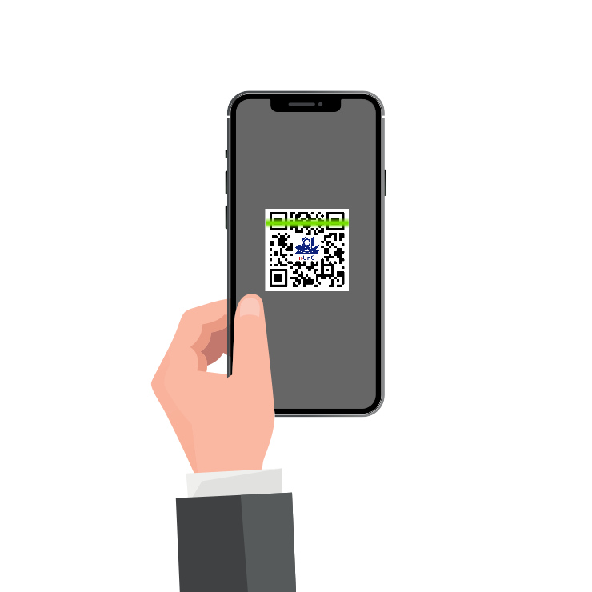

<ion-content>
	<ion-item>
		<ion-text style="text-align: center;" padding>
			Para Obter a informação do local Escanei o QR-Code
		</ion-text>
		<ion-icon name="help-circle-outline" size="large" color="primary" (click)="handleHelp()"></ion-icon>
	</ion-item>
	<div class="linhas"></div>
	<div class="linhas linhas-meio" column>
		<div class="colunas"></div>
		<div class="colunas colunas-meio">
			<div class="linha-animada"></div>
		</div>
		<div class="colunas"></div>
	</div>
	<div class="linhas"></div>
	<div class="help" *ngIf="help" (click)="handleHelp()">
		<div class="help-content">
			X<br><br>Para utilizar o Li_UnC, basta apontar para um QR-Code proprio do Li_UnC!
		</div>
		<div>
			
		</div>
	</div>
</ion-content>